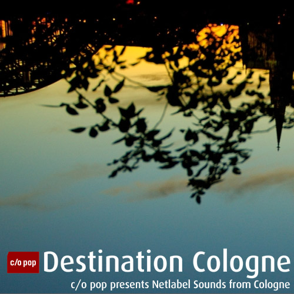

Musikkritiken
Netlabel Compilation · Phlow-Magazine.com präsentiert “Destination Cologne”, eine Compilation mit Musik von Netlabels, die aus Köln stammen und hier leben. Kuratiert von mo. präsentiert diese Sammlung ein lebendiges Profil der freien elektronischen Musikszene in einer der aktivsten Städte Deutschlands.
Nach Stockhausen und Kompakt macht sich ein neues Kollektiv daran, Köln wieder auf die Landkarte der elektronischen Musik zu setzen. Diese Netlabel-Buddies haben ihren Sound zur Compilation beigesteuert.
Wir präsentieren stolz “Destination Cologne”, eine kostenlose Netlabel-Compilation von Netlabels aus Köln. Um mehr Informationen über die beteiligten Netlabels zu erhalten, klickt auf den Netlabel-Button im Widget. Und diese Netlabels waren an der Entstehung von “Destination Cologne” beteiligt:
- Zimmerlautstaerke
- Stadtgruen
- Rest Label
- rec72
- Phonocake
- iD.EOLOGY
- FOEM
- directors cut cologne
- Der kleine grüne Würfel
- 2063music
- Soundmap of Cologne
Musikbeispiel
“Cable Pollution Results” von New Delhi Fm
Free MP3 Music Download
Playlist - Destination Cologne
- “Thalys - Mehrsprachige Zugansage” (Soundmap of Cologne)
- “Please Repeat” from System-Pi (Stadtgruen)
- “Cable Pollution Results” from New Delhi FM (Der kleine grüne Würfel)
- “The one with the lead guitar” from Monomatik(iD.EOLOGY)
- “lexington” from nika japaridze (Rest Netlabel)
- “Periodic Table” from 6884 (FOEM)
- “more” from Breitbandkater (directors cut cologne)
- “Phonocake” from Aries Fiktion (Phonocake)
- “SKOOL” from Organo Flex (72rec)
- “Jutro” from Phonout (Zimmerlautstärke)
- “04_untitled” from monostatic (2063music.de)
- “Die singenden Schranken von Holweide” (Soundmap of Cologne)